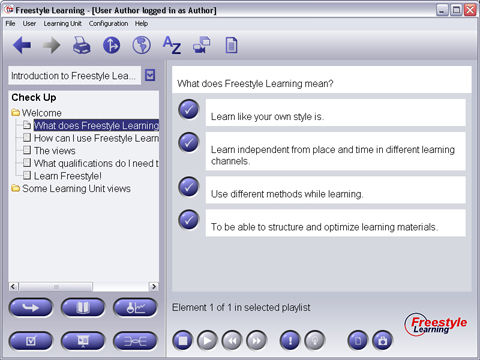

Selecting a Multiple Choice Element from the Structure Tree will display the question in the top area of the Content Panel.

Below the question, several answer alternatives will appear. One or more answer may be correct. You can select any correct answer while pressing the blue button left to the answer. Selected answer buttons will contain a check mark.
Additional View Specific Element Interaction Buttons (only in Training Mode)
|
Grafical Hint | Invokes a grafical Hint or comment from the author |
|
Audio- / Video-Hint | Invokes a Audio- or Video-Hint from the author (only if author activated) |
Back to Main Help Page